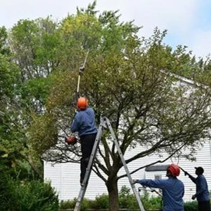
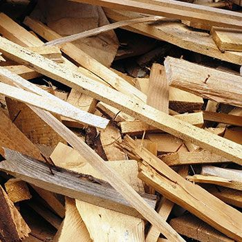
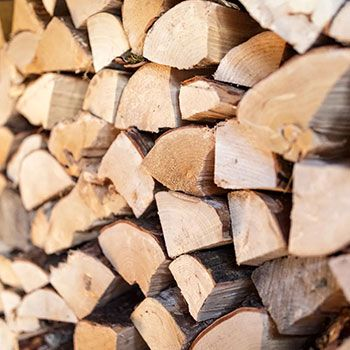

01
Tree Services
Original service image from the live site.
Deeply rooted in your community since 1964
Tree care, certified arborist proof, union-contractor credibility, mulch, firewood, and wood waste recycling all stay visible before visitors have to hunt for the right path.
The prototype now reuses the live site’s original assets for the main visual and the service proof cards, so the report reflects the same visual language visitors already see.

Original service image from the live site.

Original service image from the live site.

Original service image from the live site.
Original service image from the live site.
Steve Piper & Sons keeps its own visual identity: the banner image, logo, service cards, and contact-forward structure are now reused directly rather than replaced with placeholders.
The page makes the next action visible before visitors reach long service lists or footer details.
Free EstimateTell the team what service you need, where the project is, and any timing concerns.
They reply with the right service path, visit, appointment, or estimate details.
You have a clear way to approve the next step and stay connected.
Call Today
Yorkville, Naperville, Joliet, Aurora, Plainfield, Oswego, and surrounding IL suburbs